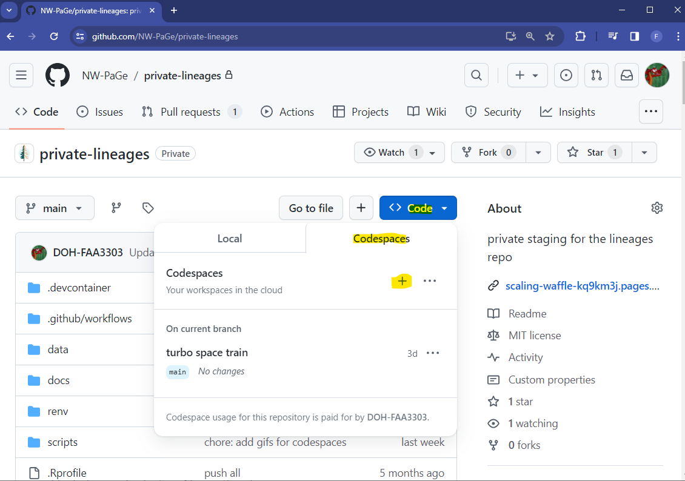
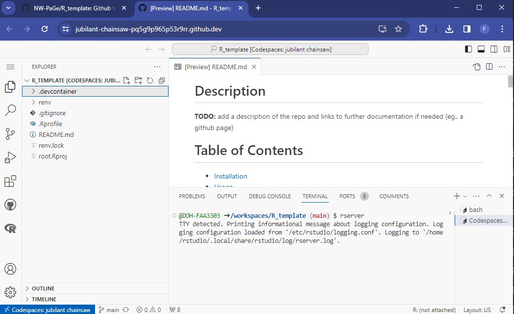
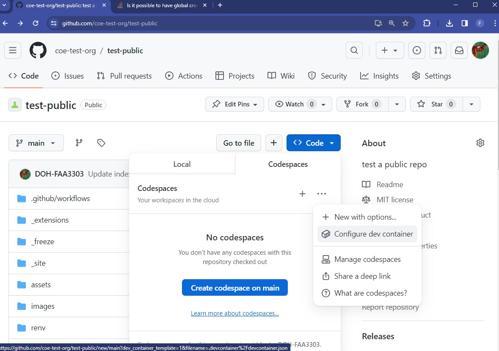
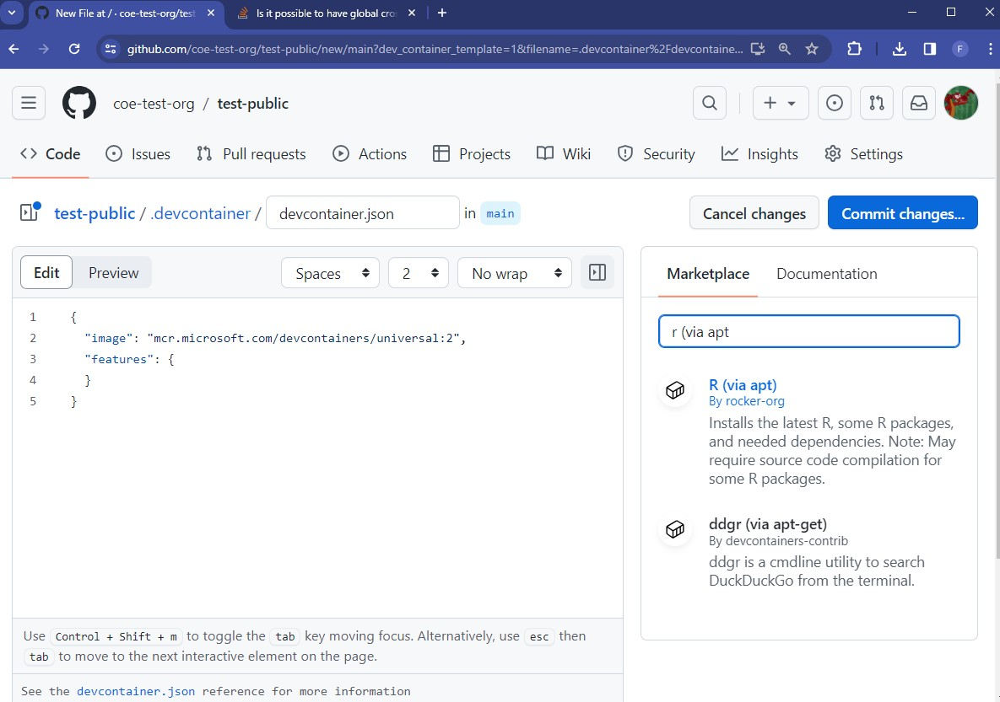

4 Reproducibility
Objectives
- Data and Code Democratization
- Github Codespaces
- Package reproducibility with virtual environments
- Github Releases
- Documentation
5 Data and Code Democratization
Data and code in our repositories need to be accessible to end users and developers. There should be no bottlenecks or difficulties with installing software, executing code, finding documentation, and using test datasets.
The goal is for any user to run code without needing to install anything on their personal machine and run your code with minimal set up. This may not be possible in every scenario, but there are tools available in Github to make this possible for the majority of our repos.
6 Github Codespaces
Github Codespaces are virtual machines (VMs) owned by Github that are connected to each repository. They let a user open the repo in a browser IDE (Integrated Development Environment) and execute the code in that environment. There is no set up or installation necessary for them.
The VMs are free for up to 60 hours a month of use and there are more hours added for Github users with paid memberships. 60 hours/month should be plenty for our purposes. Users are responsible for their own Codespace, so if they go over the limit they will be responsible for adding more hours and paying for the service.
6.1 Open a Codespace
At the root of the repo, click on the Code drop down button
- On the right there is a tab called Codespaces.
- Click the + sign and a Codespace will launch

This will open up a VS Code window in your browser. There are also options to open up a Jupyter Notebook or Jetbrains IDE (Pycharm). You can also install an Rstudio IDE into the codespace. It will look something like this - note that the repository is already linked and checked out into the codespace:

Here you can install most software. You can also customize the Codespace so that whenever someone opens one in your repo it will come with software pre-installed. More on that in the devcontainers section
6.2 Devcontainers
Devcontainers are a way to install software into a Codespace so that whenever a user opens up the Codespace they won’t need to install anything themselves. Making a container can be a little tricky, so we’ve made Github templates that have devcontainers already made. See templates. There are R, Python, and general default templates. These containers will install R, Rstudio, Python, and all the packages in the repo’s virtual environments (venv, conda, pip, renv, etc) so that the user can run all the code in your repo within a couple minutes.
To set up a devcontainer for yourself;
- Click on `Code > Codespaces > Configure dev container

- This will make a folder named
.devcontainerat the root of your repo - In that folder it will make a file named
devcontainer.json - On the right there is a searchable marketplace for software to add to your container

- Each one comes with instructions on how to add the software to the
.devcontainer.json
For more information about Codespaces, see the guides here
7 Virtual Environments
Virtual Environments are another great way to make sure aspects of your repo are reproducible. They are commonly used to record package versions that the code/project uses. For more on virtual environments, please see the venv guide.
8 Github Releases
Github Releases save code snapshots, versions, and changelogs of your repo. They are a great way for end users and developers to use different versions of their code and visualize changes that happened with each version. Please see the Github Releases guide for more information.
9 Documentation
Your code should be well documented so that end users (and developers) can understand what code is doing, how to install the software, and the utility of the project.
In general, you should have a README.md file in your repo that explains at least a high level summary of the code in the repo and what it does, how to install the code, outputs, and how to contribute to the repo. In addition, it may be a good idea to make a Github Page (a static website hosted in your repo) that explains the code in more detail. See the documentation guides here.
Having a Github Page is necessary if you have a package. Consider using software like pkgdown for R or quartodoc for Python (or other related software that helps link code to your documentation automatically). See more about package documentation here.